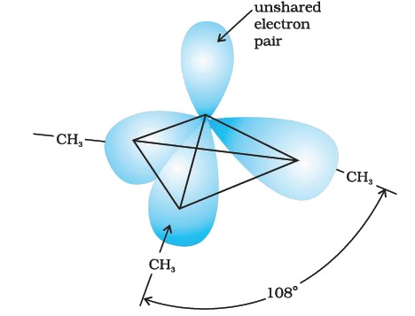

Like ammonia, nitrogen atom of amines is trivalent and carries an unshared pair of electrons. Nitrogen orbitals in amines are therefore, sp3 hybridised and the geometry of amines is pyramidal. Each of the three sp3 hybridised orbitals of nitrogen overlap with orbitals of hydrogen or carbon depending upon the composition of the amines. The fourth orbital of nitrogen in all amines contains an unshared pair of electrons. Due to the presence of unshared pair of electrons, the angle C–N–E, (where E is C or H) is less than 109.5°; for instance, it is 108o in case of trimethylamine as shown.

Pyramidal shape of trimethylamine